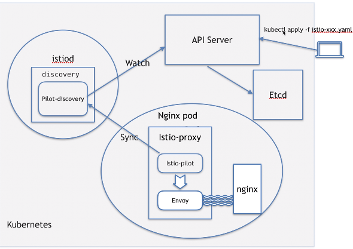
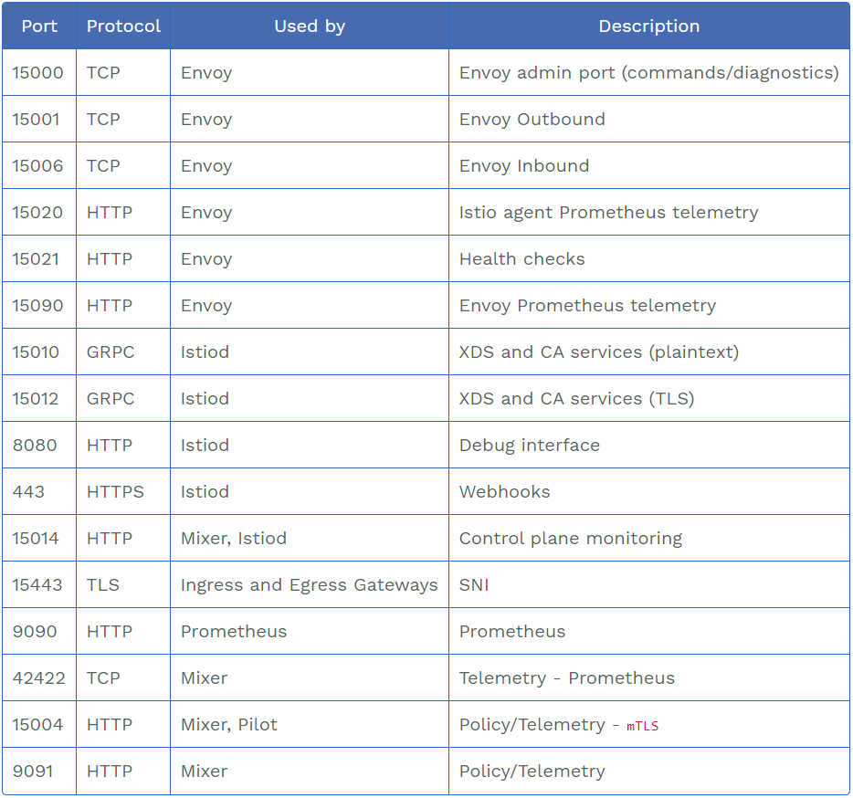

# What kind of resources can be injected
Job, DaemonSet, ReplicaSet, Pod, Deployment, 被 istio sidecar 注入后会进行 iptable 重新网络初始化等操作
Service, Secrets, ConfigMap 这三个被 istio 注入后不会有啥改变
# sidecar 注入步骤实例
$ touch jiuxi-deployment.yaml | |
$ kubectl create ns jiuxi-ns | |
$ kubectl apply -f jiuxi-deployment.yaml -n jiuxi-ns | |
$ istioctl kube-inject -f jiuxi-deployment.yaml -o jiuxi-deployment-inject.yaml | |
$ istioctl kube-inject -f jiuxi-deployment.yaml | kubectl apply -f - -n jiuxi-ns |
# 1. 源文件部署，no sidecar:
$ vim jiuxi-deployment.yaml | |
apiVersion: app/v1 | |
kind: Deployment | |
metadata: | |
name: jiuxi | |
labels: | |
app: jiuxi | |
spec: | |
replicas: 1 | |
selector: | |
matchLabels: | |
app: jiuxi | |
template: | |
metadata: | |
labels: | |
app: jiuxi | |
spec | |
containers: | |
- name: nginx | |
image:nginx:1.14-alpine | |
imagePullPolicy: IfNotPresent | |
ports: | |
- containerPort: 80 |
部署:
$ kubectl apply -f jiuxi-deployment.yaml -n jiuxi-ns |
查看 pod 提供对外服务的端口号:
$ kubect exec -it po/jiuxi-*** -n jiuxi-ns -- netstat -ntlp | |
Active Internete connections (only servers) | |
Proto Recv-Q Send-Q Local Address Foreign Address State PID/Program name | |
tcp 0 0.0.0.0:80 0.0.0.0:* LISTEN 1/nginx: master pro |
可以看到有个 master 主进程对外提供 80 端口服务
# 2. sidecar 注入
是先生成全新的 deployment 部署 pod, 再同时删除原来的 deployment 和 pod 资源，从 pod 的名字哈希后缀可以观察到变化.
$ istioctl kube-inject -f jiuxi-deployment.yaml | kubectl apply -f - -n jiuxi-ns |
可以观察到 READY 的有 2 个 pod 且 pod 名称 hash 部分有变化，dump 到文件中查看 inject 后的资源配置信息
$ istioctl kube-inject -f jiuxi-deployment.yaml > jiuxi-deployment-inject.yaml |
sidecar 注入后可以观察到 pod 里有两个运行的容器 nginx , istio-proxy , 还有一个已运行结束的 istio-init 容器.istio-init 容器是用来初始化网络命名空间，使得 nginx 和 istio-proxy 处于相同的网络空间中.
$ kubectl exec -it -n jiuxi-ns po/jiuxi-* -c nginx -- ifconfig // 或者将ifcongig替换为route -n(查看路由表) | |
eth0: ...... | |
inet addr:10.244.10.11...... | |
lo: | |
...... | |
$ kubectl exec -it -n jiuxi-ns po/jiuxi-* -c istio-proxy -- ifconfig // 或者将ifcongig替换为route -n(查看路由表) | |
eth0: ...... | |
inet addr:10.244.10.11...... | |
lo: | |
...... |
从以上可以看到 nginx 和 istio-proxy 处于相同的网络空间中.
sidecar 注入后查看 pod 提供对外服务的端口号:
$ kubect exec -it po/jiuxi-*** -c nginx -n jiuxi-ns -- netstat -ntlp | |
$ kubect exec -it po/jiuxi-*** -c istio-proxy -n jiuxi-ns -- netstat -ntlp | |
Proto Recv-Q Send-Q Local Address Foreign Address State PID/Program name | |
tcp 0 0.0.0.0:80 0.0.0.0:* LISTEN 1/nginx: master pro | |
......//Pod对外服务端口号会多增加5个 |
部署 istio 后搭建 bookinfo 实例，查看 productpage 网络
$ k exec -it -n book-info productpage-v1-7df7cb7f86-gjtfz -c istio-proxy -- netstat -ntlp | |
Active Internet connections (only servers) | |
Proto Recv-Q Send-Q Local Address Foreign Address State PID/Program name | |
tcp 0 0 0.0.0.0:15090 0.0.0.0:* LISTEN 35/envoy | |
tcp 0 0 127.0.0.1:15000 0.0.0.0:* LISTEN 35/envoy | |
tcp 0 0 0.0.0.0:15001 0.0.0.0:* LISTEN 35/envoy | |
tcp 0 0 0.0.0.0:15006 0.0.0.0:* LISTEN 35/envoy | |
tcp 0 0 0.0.0.0:15021 0.0.0.0:* LISTEN 35/envoy | |
tcp6 0 0 :::9080 :::* LISTEN - | |
tcp6 0 0 :::15020 :::* LISTEN 1/pilot-agent |
# 3. istio-iptables
tcp/ip 协议栈一般都是由 OS 内核去实现的，无论是 linux, windows, mac. 因为编码时候不会考虑传输层是什么，怎么封报，只是在应用层用 http 协议或调一些 SDK 或者调用开源包来实现数据转发或者说是报文的封装等.
但是真正实现网络层协议的还是在操作系统内核来干这些事情.
操作系统内核又一个模块 netfilter , 它有一部分功能就是来制定些网络策略，如不允许某一个 IP 或某一个网段的 IP 或者 POD 来访问你的主机.
我们不太可能直接去操作位于内核的 netfilter 来制定这些策略和管理.
Linux 给我们了一个客户端工具 iptables ，通过这个工具可以跟 OS 的 netfilter模块 进行交互来向它发送指令执行策略制定.iptables 可以看作一个客户端， netfilter 可以看作一个 server 端.
istio-init 容器在启动后不久就停止运行，改变了容器的网络策略，查看此容器日志:
$ kubectl logs -f -n jiuxi-ns jiuxi-*** -c istio-init | |
...... | |
* nat //nat表增加下面四条链 | |
:PREROUTING ACCEPT [0:0] | |
:INPUT ACCEPT [0:0] | |
:OUTPUT ACCEPT [0:0] | |
:POSTROUTING ACCEPT [0:0] | |
:ISTIO_INBOUND - [0:0] | |
:ISTIO_IN_REDIRECT - [0:0] | |
:ISTIO_OUTPUT - [0:0] | |
:ISTIO_REDIRECT - [0:0] | |
-A PREROUTING -p tcp -j ISTIO_INBOUND | |
-A OUTPUT -p tcp -j ISTIO_OUTPUT | |
-A ISTIO_INBOUND -p tcp -m tcp --dport 22 -j RETURN | |
-A ISTIO_INBOUND -p tcp -m tcp --dport 15090 -j RETURN | |
-A ISTIO_INBOUND -p tcp -m tcp --dport 15021 -j RETURN | |
-A ISTIO_INBOUND -p tcp -m tcp --dport 15020 -j RETURN | |
-A ISTIO_INBOUND -p tcp -j ISTIO_IN_REDIRECT | |
-A ISTIO_IN_REDIRECT -p tcp -j REDIRECT --to-ports 15006 | |
-A ISTIO_OUTPUT -s 127.0.0.6/32 -o lo -j RETURN | |
-A ISTIO_OUTPUT ! -d 127.0.0.1/32 -o lo -m owner --uid-owner 1337 -j ISTIO_IN_REDIRECT | |
-A ISTIO_OUTPUT -o lo -m owner ! --uid-owner 1337 -j RETURN | |
-A ISTIO_OUTPUT -m owner --uid-owner 1337 -j RETURN | |
-A ISTIO_OUTPUT ! -d 127.0.0.1/32 -o lo -m owner --gid-owner 1337 -j ISTIO_IN_REDIRECT | |
-A ISTIO_OUTPUT -o lo -m owner ! --gid-owner 1337 -j RETURN | |
-A ISTIO_OUTPUT -m owner --gid-owner 1337 -j RETURN | |
-A ISTIO_OUTPUT -d 127.0.0.1/32 -j RETURN | |
-A ISTIO_OUTPUT -j ISTIO_REDIRECT | |
-A ISTIO_REDIRECT -p tcp -j REDIRECT --to-ports 15001 // 从任意地方来的和到任意地方去的流量, 协议是tcp/ip协议, 都会转到15001这个端口 | |
COMMIT | |
# Completed on Thu Aug 13 08:59:39 2020 |
查看此 pod 被调度到哪台机器上
$ docker ps | grep -i istio-proxy | |
// 要使用privileged权限 | |
$ docker exec -it --privileged <istio-proxy_container_ID> bash | |
istio-proxy@jiuxi-***:/$ | |
istio-proxy@jiuxi-***:/$ sudo su root | |
istio-proxy@jiuxi-***:/$ iptables -nvL -t nat //通过iptables去查nat表里的iptables明细 | |
...... | |
Chain ISTIO_INBOUND () // 可以看到nat表增加了4条链 | |
...... | |
Chain ISTIO_IN_REDIRECT () | |
...... | |
Chain ISTIO_OUTPUT () | |
...... | |
Chain ISTIO_REDIRECT (1 references) // 从任意地方来的和到任意地方去的流量, 协议是tcp/ip协议, 都会转到15001这个端口 | |
pkts bytes target prot opt in out source destination | |
0 0 REDIRECT tcp -- * * 0.0.0.0/0 0.0.0.0/0 redir ports 15001 |
# 4. istio-proxy 容器进程 pilot-agent 和 envoy
下图中的 istio-pilot 也就是 pilot-agent 进程.

pilot-agent 作用
- pilot-agent (可以看作 pilot 的客户端) 不停的跟 pilot 服务端 (istiod pod 里运行的 pilot-discovery 进程可以看作是 pilot 的服务端) 进行通讯拿取从 api-server 获取的最新的资源路由等规则.
- pilot-agent 进程启动并生成 envoy 进程的启动配置.
- pilot-agent 启动 envoy 进程.
- pilot-agent 监控并管理 envoy 的运行情况，比如 envoy 出错时负责重启，envoy 配置变更后重新加载；外部流控的一些规则发生变化后，pilot-agent 会监听这种变化，然后将 envoy 以新的配置重新加载.
$ kubectl exec -it -n jiuxi-ns jiuxi-*** -c istio-proxy -- ps -ef | |
UID PID PPID C STIME TTY TIME CMD | |
/usr/local/bin/pilot-agent proxy | |
/usr/local/bin/envoy -c /etc/ist | |
ps -ef |
envoy 作用

之所以不用 nginx 而用 envoy 做 sidecar 原因是 nginx 功能啥都有，太重了，envoy 更偏轻量级，更方便使用.
$ kubectl exec -it -n jiuxi-ns jiuxi-*** -c istio-proxy -- netstat -ntlp |
可以看到 15000 端口号只允许本容器的 127.0.0.1 环回地址访问，只能供本容器的进程访问.
# 用同样的 image 运行了不同进程解析
istio-init 容器和 istio-proxy 容器都使用相同的 image 如: docker.io/istio/proxyv2:1.5.0, 但是 istio-init 容器运行 iptables 进程，istio-proxy 容器运行 pilot-envoy 和 envoy 两个进程，原因如下:
当用户同时在 kubernetes 中的 yaml 中写了 command 和 args 时候自然是可以覆盖 DockerFile 中 ENTRYPOINT 的命令行和参数，完整情况如下:
- 如果 command 和 args 均没有写，那么用 Docker 默认的配置.
- 如果 command 写了，但 args 没有写，那么 Docker 默认的配置会被忽略而且仅仅执行.yaml 文件的 command (不带任何参数的).
- 如果 command 没写，但 args 写了，那么 Docker 默认配置的 ENTRYPOINT 的命令行会被执行，但是调用的参数是.yaml 中的 args.(istio-proxy 和 istio-init 容器都是这样)
- 如果 command 和 args 都写了，那么 Docker 默认的配置被忽略，使用.yaml 的配置
- 查看 istio/proxyv2:1.5.0 image 原数据
$ docker images | grep -i proxyv2 | |
$ docker inspect <istio/proxyv2:1.5.0_ID> | |
...... | |
"Cmd": null, | |
...... | |
"Entrypoint":[ //image被运行成容器时候执行的命令 | |
"usr/local/bin/pilot-agent" | |
], | |
...... |
- 查看 istio-init 容器 yaml 资源配置
$ kubectl get po -n jiuxi-ns jiuxi-*** | |
...... | |
initContainers: | |
- args: // 有command, 因此容器会仅执行此command而且忽略image原数据里的args参数 | |
- istio-iptables | |
- -p | |
...... |
查看 istio-init 容器进程
$ docker ps -a --no-trunc| grep istio-init | |
...... | |
"/usr/local/bin/pilot-agent istio-iptables -p 15001 -z 15006 -u 1337 -m REDIRECT -i * -x -b * -d 15090,15021,15020" | |
...... |
- 查看 istio-proxy 容器 yaml 资源配置
$ kubectl get po -n jiuxi-ns jiuxi-*** //可以在同一个pod资源文件查看istio-proxy和istio-init的yaml配置 | |
...... | |
- args: // 有args但是没有command, 因此用image原数据里的command并用此yaml里的args参数. | |
- proxy | |
- sidecar | |
- domain | |
- $(POD_NAMESPACE).svc.cluster.local | |
- configPath | |
/etc/istio/proxy // pilot-agent生成envoy配置文件 | |
- --binaryPath | |
- /usr/local/bin/envoy // pilot-agent启动envoy进程 | |
...... |
查看 istio-proxy 容器进程
$ docker ps --no-trunc| grep istio-proxy | |
...... | |
"/usr/local/bin/pilot-agent proxy sidecar --domain istio-system.svc.cluster.local istio-proxy-prometheus --proxyLogLevel=warning --proxyComponentLogLevel=misc:error --controlPlaneAuthPolicy NONE --trust-domain=cluster.local" | |
...... |
# sidecar 自动注入
$ kubectl label ns jiuxi-ns istio-injection=enabled //添加标签，部署到此namespace空间下的pod自动sidecar注入 | |
$ kubectl label ns jiuxi-ns istio-injection- //取消标签操作 |
# sidecar 注入到 svc 等其它资源
$ kubectl expose deployment jiuxi -n deployment // 在deployment资源基础上自动生成svc | |
$ kubectl get svc -n jiuxi-ns jiuxi -o yaml > jiuxi-svc.yaml | |
$ istioctl kube-inject -f jiuxi-svc.yaml -o jiuxi-svc-inject.yaml //sidecar 注入svc，会发现svc的yaml文件内容并没有变化 |